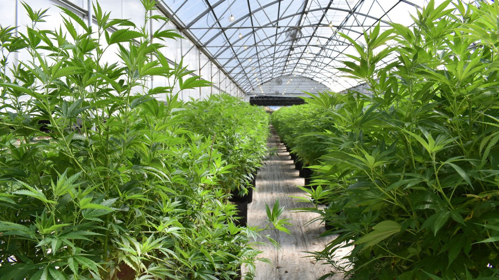

Unveiling the Secrets to Starting a Dispensary in Colorado:

Your Comprehensive Guide to Obtaining the Right Licenses
As experts in the cannabis industry, we understand the complexities of starting a dispensary in Colorado. In this comprehensive guide, we will walk you through the licenses needed to start a dispensary in Colorado and provide you with valuable insights to help you succeed.
License Types for Starting a Dispensary in Colorado
The Colorado Department of Revenue's Marijuana Enforcement Division (MED) oversees the licensing process for medical and recreational marijuana businesses in the state. To operate a dispensary in Colorado, you must obtain a retail marijuana license.
There are two types of retail marijuana licenses available:
- Medical Marijuana Center (MMC) License: This license allows you to operate a medical marijuana dispensary and sell marijuana to individuals with a valid medical marijuana card.
- Retail Marijuana Store (RMS) License: This license allows you to operate a recreational marijuana dispensary and sell marijuana to anyone over the age of 21.
In addition to the retail marijuana license, you will also need to obtain other licenses and permits to start a dispensary in Colorado.
Local Licenses and Permits
Before you can apply for a retail marijuana license, you must obtain a local license and permit from the city or county where you plan to operate. The requirements for local licenses and permits vary depending on the jurisdiction.
Some of the common local licenses and permits you may need include:
- Business license
- Zoning permit
- Sales tax license
- Building permit
- Fire inspection
State Licenses and Permits
Once you have obtained your local license and permit, you can apply for a retail marijuana license from the Colorado MED. To obtain a retail marijuana license, you will need to complete the following steps:
- Submit an application: You can submit an application for a retail marijuana license through the Colorado MED's online portal.
- Background checks: All owners, managers, and employees of a dispensary must undergo a background check.
- Financial disclosures: You must provide detailed financial information, including sources of funding and financial projections for your business.
- Facility inspection: The Colorado MED will inspect your dispensary to ensure it meets all state requirements.
- Application fee: You must pay an application fee to the Colorado MED when you submit your application.
Once your application is approved, you will receive your retail marijuana license, and you can begin operating your dispensary.
Conclusion
Starting a dispensary in Colorado requires a significant amount of time and effort to obtain the necessary licenses and permits. By following the steps outlined in this guide, you can ensure that you have all the licenses and permits needed to start a successful dispensary in Colorado.
If you are interested in starting a dispensary in Colorado and need assistance with the licensing process, please contact us. We are a team of experts in the cannabis industry and can provide you with valuable insights and guidance to help you succeed.